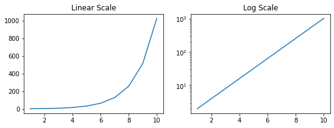
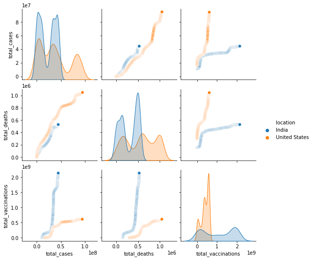

import pandas as pd
import numpy as np
import matplotlib.pyplot as plt
import sys1 Covid19 data analysis
Data analysis often requiring pre-processing of the data before the actual analysis. One must have a good understanding of not only the contents of the data but also must pay attention to the layout of the data. Many a times it is imperative to change the layout of the data to perform the analysis that we intend to do. We’ll now look at some of these concepts in action using the Covid19 data avaiable from Our World in Data. The csv file is available here.
df1 = pd.read_csv("owid-covid-data.csv")
print(df1.shape)
df1.tail()(214477, 67)| iso_code | continent | location | date | total_cases | new_cases | new_cases_smoothed | total_deaths | new_deaths | new_deaths_smoothed | ... | female_smokers | male_smokers | handwashing_facilities | hospital_beds_per_thousand | life_expectancy | human_development_index | excess_mortality_cumulative_absolute | excess_mortality_cumulative | excess_mortality | excess_mortality_cumulative_per_million | |
|---|---|---|---|---|---|---|---|---|---|---|---|---|---|---|---|---|---|---|---|---|---|
| 214472 | ZWE | Africa | Zimbabwe | 2022-09-02 | 256744.0 | 6.0 | 8.857 | 5596.0 | 0.0 | 0.429 | ... | 1.6 | 30.7 | 36.791 | 1.7 | 61.49 | 0.571 | NaN | NaN | NaN | NaN |
| 214473 | ZWE | Africa | Zimbabwe | 2022-09-03 | 256755.0 | 11.0 | 10.429 | 5596.0 | 0.0 | 0.429 | ... | 1.6 | 30.7 | 36.791 | 1.7 | 61.49 | 0.571 | NaN | NaN | NaN | NaN |
| 214474 | ZWE | Africa | Zimbabwe | 2022-09-04 | 256763.0 | 8.0 | 9.143 | 5596.0 | 0.0 | 0.429 | ... | 1.6 | 30.7 | 36.791 | 1.7 | 61.49 | 0.571 | NaN | NaN | NaN | NaN |
| 214475 | ZWE | Africa | Zimbabwe | 2022-09-05 | 256769.0 | 6.0 | 9.286 | 5596.0 | 0.0 | 0.429 | ... | 1.6 | 30.7 | 36.791 | 1.7 | 61.49 | 0.571 | NaN | NaN | NaN | NaN |
| 214476 | ZWE | Africa | Zimbabwe | 2022-09-06 | 256782.0 | 13.0 | 10.571 | 5596.0 | 0.0 | 0.429 | ... | 1.6 | 30.7 | 36.791 | 1.7 | 61.49 | 0.571 | NaN | NaN | NaN | NaN |
5 rows × 67 columns
This is a large dataset having thousands of rows and multiple columns. First, lets check what all information we have in this dataset i.e. what all columns are there. This can be achived by columns attribute of the dataframe. Please refer to the Our World in Data website for more information about the contents of this dataset.
df_India.columnsIndex(['iso_code', 'continent', 'location', 'date', 'total_cases', 'new_cases',
'new_cases_smoothed', 'total_deaths', 'new_deaths',
'new_deaths_smoothed', 'total_cases_per_million',
'new_cases_per_million', 'new_cases_smoothed_per_million',
'total_deaths_per_million', 'new_deaths_per_million',
'new_deaths_smoothed_per_million', 'reproduction_rate', 'icu_patients',
'icu_patients_per_million', 'hosp_patients',
'hosp_patients_per_million', 'weekly_icu_admissions',
'weekly_icu_admissions_per_million', 'weekly_hosp_admissions',
'weekly_hosp_admissions_per_million', 'total_tests', 'new_tests',
'total_tests_per_thousand', 'new_tests_per_thousand',
'new_tests_smoothed', 'new_tests_smoothed_per_thousand',
'positive_rate', 'tests_per_case', 'tests_units', 'total_vaccinations',
'people_vaccinated', 'people_fully_vaccinated', 'total_boosters',
'new_vaccinations', 'new_vaccinations_smoothed',
'total_vaccinations_per_hundred', 'people_vaccinated_per_hundred',
'people_fully_vaccinated_per_hundred', 'total_boosters_per_hundred',
'new_vaccinations_smoothed_per_million',
'new_people_vaccinated_smoothed',
'new_people_vaccinated_smoothed_per_hundred', 'stringency_index',
'population', 'population_density', 'median_age', 'aged_65_older',
'aged_70_older', 'gdp_per_capita', 'extreme_poverty',
'cardiovasc_death_rate', 'diabetes_prevalence', 'female_smokers',
'male_smokers', 'handwashing_facilities', 'hospital_beds_per_thousand',
'life_expectancy', 'human_development_index',
'excess_mortality_cumulative_absolute', 'excess_mortality_cumulative',
'excess_mortality', 'excess_mortality_cumulative_per_million'],
dtype='object')Next, we need to ask question(s) that we would like to be addressed through the analysis of this data. One such question could be – which are the top 10 countries with the highest number of total Covid19 cases? Given our dataset, we need to breakdown this problem into different steps. First get all the rows with the most current date in the date column. For this example we’ll retain only the location and total_cases columns although we can certain retain the entire dataset as well. An important point to note here is that that the location column need not have only the names of countries; there are certain groups name that are present as well, which we need to filter out. To filter these non-country location we need to prepare a list of all such group names (viz. World, Asia, etc). This list would then be passed to the isin function to make the required selection from the original dataframe. Next, using the nlargest function we can get the top n values for the total_cases column. The total_cases are formated to show the values with commas.
top_10 = df1[df1["date"]=="2022-09-06"][["location","total_cases"]]
groups_list = ["World","High income","Upper middle income", "Europe", "Asia", "European Union", \
"Africa", "Lower middle income", "North America", "South America"]
top_10 = top_10.loc[~top_10["location"].isin(groups_list)] # note the ~ operator
top_10 = top_10.nlargest(10,"total_cases").reset_index(drop=True)
top_10.style.format({"total_cases": "{:,.0f}"})| location | total_cases | |
|---|---|---|
| 0 | United States | 94,898,863 |
| 1 | India | 44,469,661 |
| 2 | France | 34,685,277 |
| 3 | Brazil | 34,477,539 |
| 4 | Germany | 32,344,032 |
| 5 | South Korea | 23,791,961 |
| 6 | United Kingdom | 23,521,792 |
| 7 | Italy | 21,969,725 |
| 8 | Japan | 19,640,667 |
| 9 | Russia | 19,521,190 |
To get countries with the maximum number of cases per continent, we can use the groupby function to group the dataframe by continent column. Then using the idmax function the indices of the highest value for the total_cases column is retrieved. To get the final list, use these indices to get rows by location i.e. with the loc attribute of the dataframe.
top_10_cont = df1[["continent","location","total_cases"]]
top_10_cont.loc[top_10_cont.groupby("continent")["total_cases"].idxmax()].reset_index(drop=True)| continent | location | total_cases | |
|---|---|---|---|
| 0 | Africa | South Africa | 4012920.0 |
| 1 | Asia | India | 44469661.0 |
| 2 | Europe | France | 34685277.0 |
| 3 | North America | United States | 94898863.0 |
| 4 | Oceania | Australia | 10095000.0 |
| 5 | South America | Brazil | 34477539.0 |
Bar plot of top 10 countries.
fig, ax = plt.subplots()
ax.barh(top_10["location"],top_10["total_cases"], color="lightblue")
ax.spines[["top","right","left"]].set_visible(False)
ax.yaxis.set_ticks_position('none')
a=ax.get_yticklabels()
ax.grid('on',which='major',axis='x')
ax.invert_yaxis()
plt.show()1.1 Changing axis scale
On a linear scale there is a fixed increment at regular intervals. The positioning of the tick marks on the axis for a graph with linear scale is calculated by addition. Whereas, on a log scale the ticks on the axis are marked using multiplication factor. This makes log scale graphs less intuitive to understand the underlying information and therefore it requires some training to parse graphs with log scale. Let’s plot some data to get a clarity on this distinction between these scales. For this example, we’ll plot exponential curve i.e. the values would be like 1,2,4,8,16,32…etc. The graphs below shows this trend plotted with y-axis having a linear (left) and a log (right) scale. Notice how different the two curves look! The log scale graph is useful in interpreting the pattern of the growth such that an exponential growth on a log scale would result in a straight line.
import numpy as np
N=1
x = range(1,11)
y = []
for a in x:
N = N*2
y.append(N)
fig, (ax1,ax2) = plt.subplots(nrows=1, ncols=2,figsize=(9,3))
ax1.plot(x,y)
ax2.plot(x,y)
ax2.set_yscale('log')
ax1.set_title("Linear Scale")
ax2.set_title("Log Scale")
plt.show()
Let’s plot the emergence of new cases on linear and log scales.
fig,ax=plt.subplots(1,2,figsize=(12,3))
df1[df1["location"]=="India"].plot(x="date", y="total_cases",ax=ax[0])
df1[df1["location"]=="United States"].plot(x="date", y="total_cases",ax=ax[0])
df1[df1["location"]=="France"].plot(x="date", y="total_cases",ax=ax[0])
ax[0].legend(["India","United States", "France"])
ax[0].set_ylabel("Total Cases")
ax[0].set_title("Linear")
df1[df1["location"]=="India"].plot(x="date", y="total_cases",ax=ax[1])
df1[df1["location"]=="United States"].plot(x="date", y="total_cases",ax=ax[1])
df1[df1["location"]=="France"].plot(x="date", y="total_cases",ax=ax[1])
plt.legend(["India","United States", "France"])
ax[1].legend(["India","United States", "France"])
ax[1].set_ylabel("Total Cases")
ax[1].set_yscale("log")
ax[1].set_title("Log")
plt.tight_layout()
plt.show()
1.2 Function to plot total cases
We can write a function to plot the time series of total cases for any location(s). This function would be define with *args to hold a list of locations that need to be plotted.
def plot_country(*args):
fig,ax=plt.subplots(figsize=(8,3))
for c in args:
df1[df1["location"]==c].plot(x="date", y="total_cases",ax=ax)
plt.legend(args)
plt.show()
plot_country("India","United States")
The visualize emergence of new cases over time, we need to plot the new_cases for a given location. This kind of plot would give us an idea about the “waves” of the pandemic.
fig,ax=plt.subplots(figsize=(8,3))
df1[df1["location"]=="India"].plot(x="date", y="new_cases",ax=ax)
plt.ylabel("Number of cases")
plt.legend(["India"])
plt.show()The analyze a particular country in detail, a subset of the dataframe can be created having data for only that country. In the example below we’ll make a dataframe for location “India” and then we’ll find out number of monthly cases in a specific year. For this we’ll first need to change the datatype of the “date” column to pandas datatime datatype. The datatypes for all the columns can be checked by used the dtypes attribute for the dataframe.
df_India = df1[df1["location"]=="India"]
df_India.head()| iso_code | continent | location | date | total_cases | new_cases | new_cases_smoothed | total_deaths | new_deaths | new_deaths_smoothed | ... | female_smokers | male_smokers | handwashing_facilities | hospital_beds_per_thousand | life_expectancy | human_development_index | excess_mortality_cumulative_absolute | excess_mortality_cumulative | excess_mortality | excess_mortality_cumulative_per_million | |
|---|---|---|---|---|---|---|---|---|---|---|---|---|---|---|---|---|---|---|---|---|---|
| 88211 | IND | Asia | India | 2020-01-30 | 1.0 | 1.0 | NaN | NaN | NaN | NaN | ... | 1.9 | 20.6 | 59.55 | 0.53 | 69.66 | 0.645 | NaN | NaN | NaN | NaN |
| 88212 | IND | Asia | India | 2020-01-31 | 1.0 | 0.0 | NaN | NaN | NaN | NaN | ... | 1.9 | 20.6 | 59.55 | 0.53 | 69.66 | 0.645 | NaN | NaN | NaN | NaN |
| 88213 | IND | Asia | India | 2020-02-01 | 1.0 | 0.0 | NaN | NaN | NaN | NaN | ... | 1.9 | 20.6 | 59.55 | 0.53 | 69.66 | 0.645 | NaN | NaN | NaN | NaN |
| 88214 | IND | Asia | India | 2020-02-02 | 2.0 | 1.0 | NaN | NaN | NaN | NaN | ... | 1.9 | 20.6 | 59.55 | 0.53 | 69.66 | 0.645 | NaN | NaN | NaN | NaN |
| 88215 | IND | Asia | India | 2020-02-03 | 3.0 | 1.0 | NaN | NaN | NaN | NaN | ... | 1.9 | 20.6 | 59.55 | 0.53 | 69.66 | 0.645 | NaN | NaN | NaN | NaN |
5 rows × 67 columns
print("The data type for the date column is", df_India['date'].dtype)
df_India['date'] = pd.to_datetime(df_India['date'])
print("The data type for the date column is", df_India['date'].dtype)The data type for the date column is object
The data type for the date column is datetime64[ns]df_India_2022 = df_India[(df_India["date"] >= '2022-01-01')]
df_India_2022.dtypesiso_code object
continent object
location object
date datetime64[ns]
total_cases float64
...
human_development_index float64
excess_mortality_cumulative_absolute float64
excess_mortality_cumulative float64
excess_mortality float64
excess_mortality_cumulative_per_million float64
Length: 67, dtype: objectdf_months = df_India_2022.groupby(df_India_2022['date'].dt.strftime('%B'))["new_cases"].sum().to_frame().reset_index()
df_months| date | new_cases | |
|---|---|---|
| 0 | April | 53413.0 |
| 1 | August | 400064.0 |
| 2 | February | 1461546.0 |
| 3 | January | 6607920.0 |
| 4 | July | 567041.0 |
| 5 | June | 308402.0 |
| 6 | March | 94730.0 |
| 7 | May | 81644.0 |
| 8 | September | 33322.0 |
To sort the dataframe by month, we need to first change the data type of the months column to catagorical since the default data type of this column (object) would lead to sorting by alphabetical order. We would like to sort this column by the order that we see in a calender (which, of course, is not alphabetical).
df_months.sort_values(by="date",inplace=True, ignore_index=True)
df_months_1 = df_months.style.set_caption("Date as object data type")
display(df_months_1)
months = ["January", "February", "March", "April", "May", "June",
"July", "August", "September", "October", "November", "December"]
df_months['date'] = pd.Categorical(df_months['date'], categories=months, ordered=True)
df_months.sort_values(by="date",inplace=True, ignore_index=True)
df_months_2 = df_months.style.set_caption("Date as catagorical data type")
display(df_months_2)| date | new_cases | |
|---|---|---|
| 0 | April | 53413.000000 |
| 1 | August | 400064.000000 |
| 2 | February | 1461546.000000 |
| 3 | January | 6607920.000000 |
| 4 | July | 567041.000000 |
| 5 | June | 308402.000000 |
| 6 | March | 94730.000000 |
| 7 | May | 81644.000000 |
| 8 | September | 33322.000000 |
| date | new_cases | |
|---|---|---|
| 0 | January | 6607920.000000 |
| 1 | February | 1461546.000000 |
| 2 | March | 94730.000000 |
| 3 | April | 53413.000000 |
| 4 | May | 81644.000000 |
| 5 | June | 308402.000000 |
| 6 | July | 567041.000000 |
| 7 | August | 400064.000000 |
| 8 | September | 33322.000000 |
fig,ax=plt.subplots()
df_months.plot(kind="bar",xlabel="date", ax=ax)
ax.set_xticklabels(["January", "February", "March", "April", "May", "June", \
"July", "August", "September"])
plt.ylabel("Number of cases")
plt.show()
df_India_2022["date"] = df_India_2022["date"].dt.strftime('%B')
months = ["January", "February", "March", "April", "May", "June","July", "August", "September"]
df_India_2022['date'] = pd.Categorical(df_India_2022['date'], categories=months, ordered=True)
df_India_2022.sort_values(by="date",inplace=True, ignore_index=True)
df_India_2022.head()| iso_code | continent | location | date | total_cases | new_cases | new_cases_smoothed | total_deaths | new_deaths | new_deaths_smoothed | ... | female_smokers | male_smokers | handwashing_facilities | hospital_beds_per_thousand | life_expectancy | human_development_index | excess_mortality_cumulative_absolute | excess_mortality_cumulative | excess_mortality | excess_mortality_cumulative_per_million | |
|---|---|---|---|---|---|---|---|---|---|---|---|---|---|---|---|---|---|---|---|---|---|
| 0 | IND | Asia | India | January | 34889132.0 | 27553.0 | 14618.571 | 481770.0 | 284.0 | 298.286 | ... | 1.9 | 20.6 | 59.55 | 0.53 | 69.66 | 0.645 | NaN | NaN | NaN | NaN |
| 1 | IND | Asia | India | January | 41469499.0 | 167059.0 | 238613.857 | 496242.0 | 1192.0 | 825.714 | ... | 1.9 | 20.6 | 59.55 | 0.53 | 69.66 | 0.645 | NaN | NaN | NaN | NaN |
| 2 | IND | Asia | India | January | 41302440.0 | 209918.0 | 251301.714 | 495050.0 | 959.0 | 743.143 | ... | 1.9 | 20.6 | 59.55 | 0.53 | 69.66 | 0.645 | NaN | NaN | NaN | NaN |
| 3 | IND | Asia | India | January | 41092522.0 | 234281.0 | 265036.857 | 494091.0 | 893.0 | 668.857 | ... | 1.9 | 20.6 | 59.55 | 0.53 | 69.66 | 0.645 | NaN | NaN | NaN | NaN |
| 4 | IND | Asia | India | January | 40858241.0 | 235532.0 | 279215.714 | 493198.0 | 871.0 | 616.286 | ... | 1.9 | 20.6 | 59.55 | 0.53 | 69.66 | 0.645 | NaN | NaN | NaN | NaN |
5 rows × 67 columns
ax = df_India_2022.boxplot(column="new_cases",by="date")
plt.title("")
plt.show()1.3 Seaborn library
import seaborn as snsnew_df = df1.loc[df1['location'].isin(["India","United States"])]
new_df| iso_code | continent | location | date | total_cases | new_cases | new_cases_smoothed | total_deaths | new_deaths | new_deaths_smoothed | ... | female_smokers | male_smokers | handwashing_facilities | hospital_beds_per_thousand | life_expectancy | human_development_index | excess_mortality_cumulative_absolute | excess_mortality_cumulative | excess_mortality | excess_mortality_cumulative_per_million | |
|---|---|---|---|---|---|---|---|---|---|---|---|---|---|---|---|---|---|---|---|---|---|
| 88211 | IND | Asia | India | 2020-01-30 | 1.0 | 1.0 | NaN | NaN | NaN | NaN | ... | 1.9 | 20.6 | 59.55 | 0.53 | 69.66 | 0.645 | NaN | NaN | NaN | NaN |
| 88212 | IND | Asia | India | 2020-01-31 | 1.0 | 0.0 | NaN | NaN | NaN | NaN | ... | 1.9 | 20.6 | 59.55 | 0.53 | 69.66 | 0.645 | NaN | NaN | NaN | NaN |
| 88213 | IND | Asia | India | 2020-02-01 | 1.0 | 0.0 | NaN | NaN | NaN | NaN | ... | 1.9 | 20.6 | 59.55 | 0.53 | 69.66 | 0.645 | NaN | NaN | NaN | NaN |
| 88214 | IND | Asia | India | 2020-02-02 | 2.0 | 1.0 | NaN | NaN | NaN | NaN | ... | 1.9 | 20.6 | 59.55 | 0.53 | 69.66 | 0.645 | NaN | NaN | NaN | NaN |
| 88215 | IND | Asia | India | 2020-02-03 | 3.0 | 1.0 | NaN | NaN | NaN | NaN | ... | 1.9 | 20.6 | 59.55 | 0.53 | 69.66 | 0.645 | NaN | NaN | NaN | NaN |
| ... | ... | ... | ... | ... | ... | ... | ... | ... | ... | ... | ... | ... | ... | ... | ... | ... | ... | ... | ... | ... | ... |
| 203103 | USA | North America | United States | 2022-09-02 | 94733881.0 | 82785.0 | 78205.571 | 1047482.0 | 472.0 | 501.571 | ... | 19.1 | 24.6 | NaN | 2.77 | 78.86 | 0.926 | NaN | NaN | NaN | NaN |
| 203104 | USA | North America | United States | 2022-09-03 | 94743672.0 | 9791.0 | 77982.714 | 1047504.0 | 22.0 | 500.429 | ... | 19.1 | 24.6 | NaN | 2.77 | 78.86 | 0.926 | NaN | NaN | NaN | NaN |
| 203105 | USA | North America | United States | 2022-09-04 | 94749783.0 | 6111.0 | 77879.571 | 1047505.0 | 1.0 | 500.286 | ... | 19.1 | 24.6 | NaN | 2.77 | 78.86 | 0.926 | NaN | NaN | NaN | NaN |
| 203106 | USA | North America | United States | 2022-09-05 | 94769820.0 | 20037.0 | 66083.857 | 1047576.0 | 71.0 | 444.714 | ... | 19.1 | 24.6 | NaN | 2.77 | 78.86 | 0.926 | NaN | NaN | NaN | NaN |
| 203107 | USA | North America | United States | 2022-09-06 | 94898863.0 | 129043.0 | 74251.286 | 1048201.0 | 625.0 | 484.571 | ... | 19.1 | 24.6 | NaN | 2.77 | 78.86 | 0.926 | NaN | NaN | NaN | NaN |
1910 rows × 67 columns
sns.jointplot(data=new_df,\
x="new_cases",y="new_deaths", hue="location")<seaborn.axisgrid.JointGrid at 0x23a3cb50d00>sns.jointplot(data=new_df, x="total_cases",y="total_vaccinations", hue="location")<seaborn.axisgrid.JointGrid at 0x23a3cc41430>
sns.pairplot(new_df[["location","total_cases","total_deaths","total_vaccinations"]],hue="location")<seaborn.axisgrid.PairGrid at 0x23a3cdc6d00>